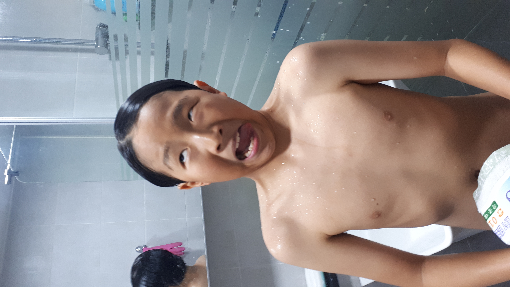

안녕하세요? 어머니 아버지 박인석,박인욱입니다. 어버이날이라서 이렇게 편지를 쓰는데 일단 먼저 감사하다는 말부터 드리고 싶습니다.저희가 아플때 간호해주시고 저희에게 문제가 있을때 해결해주셔서 정말 감사합니다.저희가 지금은 사춘기라서 말을 잘 안듯고 말썽을 부리는 경향이 있는데 그런 점은 앞으로 고치고,부모님께 더 도움이 되는 일만 하고 또 행복하게해드리겠습니다.그래서 지금부터 공부도 열심히하고 부모님 속썩이는 일은 가능한 한 없게 하도록 노력하겠습니다. -인욱,인석 올림
